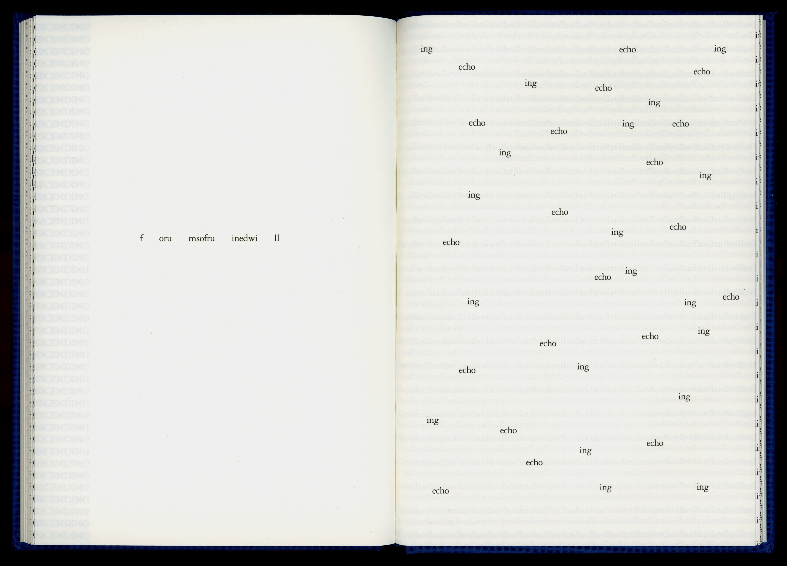
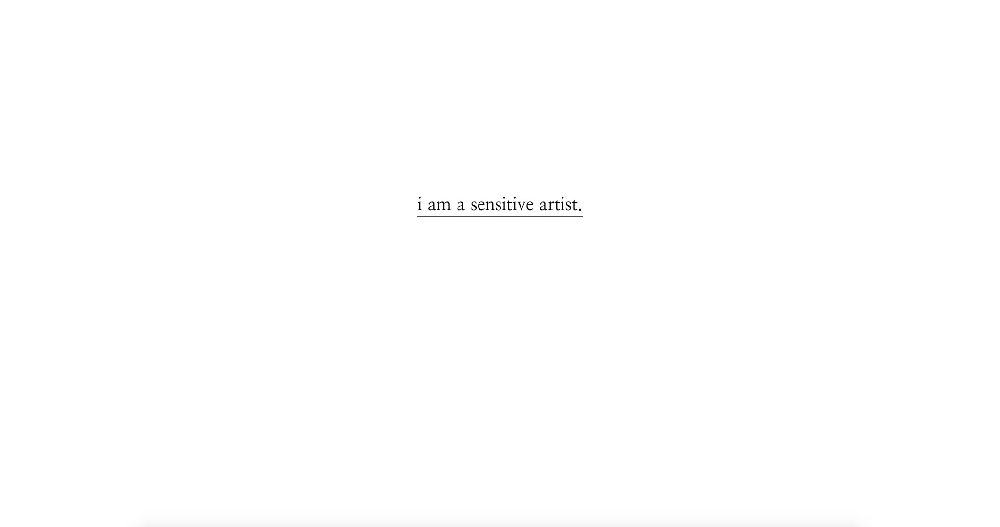
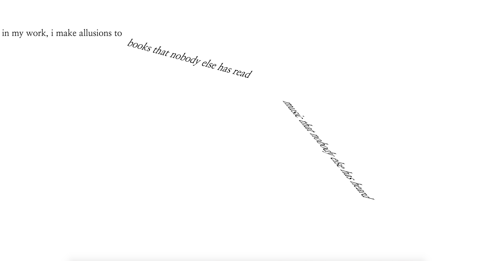
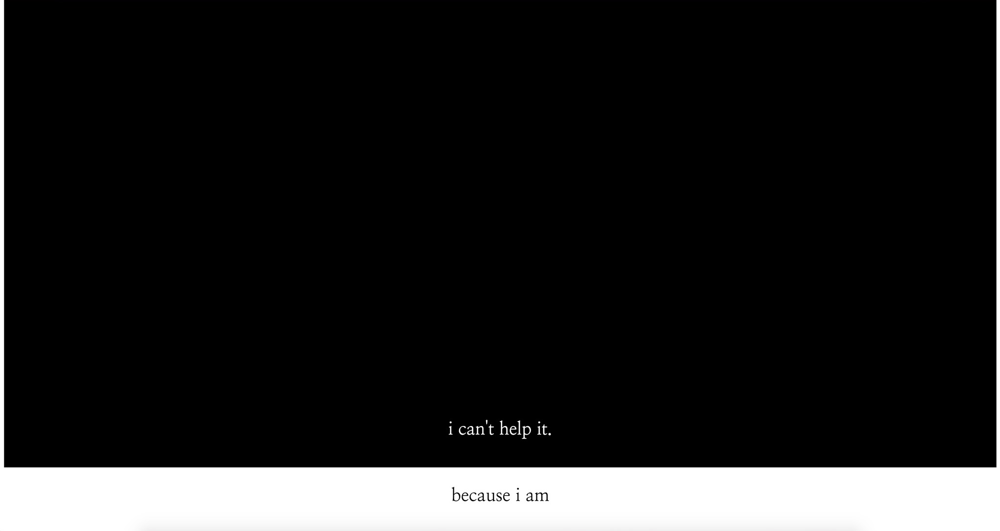

pictured: N.H. Pritchard, from "Via"
i was largely inspired by concrete poetry, which is essentially painting with words. the composition of the words and the overall form takes precedence over what the actual words are.
the title of the song and the first image the user sees upon opening the page. surrounded by a large amount of white space, the underlined statement holds importance and gravity.
the artist relies on his "obscure" allusions to seem more intelligent. he specifically states "books that nobody else has read, music that nobody else has heard, and art that nobody else has seen." the repetition in the syntax highlights the narrator's desperation to prove himself.
"i can't help it" is meant to be a casual phrase. however, its nonchalance is contradicted by the list that follows beforehand. on the page, the statement comes at the end of a long black box the user has to scroll through, making it seem more minimal, juxtaposing the list.
For this expressive text project, we were assigned to take a piece of writing and use typographic stylizations to transform it into a digital experience as the user scrolls through the page we created.
My text came from the first verse of the song “Sensitive Artist” by King Missile, a satire that mocks pretentious artists who try too hard to seem mysterious and misunderstood in an attempt to elevate their artistry and intelligence. The narrator of the song holds a tone of contempt, citing their books and galleries and recitals — which also eventually became too idiotic for them. In order to match this tone, I made the majority of the text in a lightweight serif font to indicate a sense of casualty and pompousness. It’s almost all in black and white, a chic and nonchalant color scheme.
However, the narrator holds desperation in the way they feel the need to prove themselves. The first image the user is greeted with upon opening the page is a singular line: “i am a sensitive artist.” Serif. Lowercase. Laidback, chill. It’s in the center, not twisted or in the corner — not trying too hard to be edgy, cool, different. Underlined. Emphasized. This narrator needs you to know this. It is of utmost importance. Please, please understand that this person is an artiste, which means they’re deeper than you, more complex than you, more intelligent than you — please, you get that right? You think they’re all those things and more? Right? Right? Their list of books, music, and art strains under its need to impress. The more they list, the more they try to twist your perception of them, the more their facade crumbles.
This project was a large exercise in css, as the spacing and pace of the text had to be precise in order to convey the tone I wanted. It was also a fun exploration in all the text transformation features in css, as the open-ended nature of the assignment allowed for as much creativity as we wanted. Because of the text I chose, it was a challenge in making the simple engaging, focused purely on text treatments, taking away “more interesting” elements, such as images or videos.



